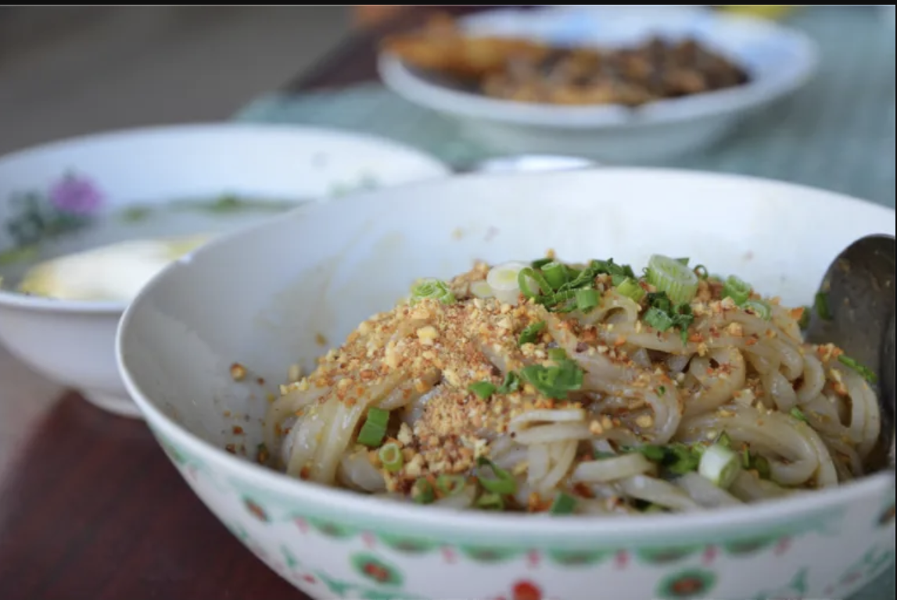
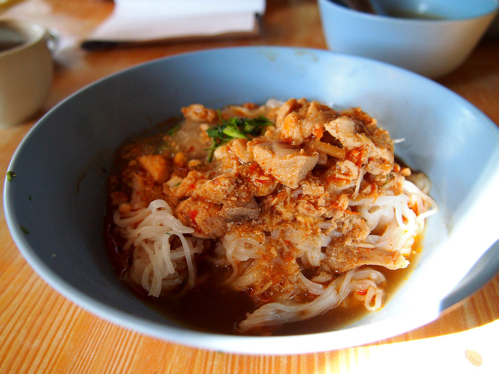
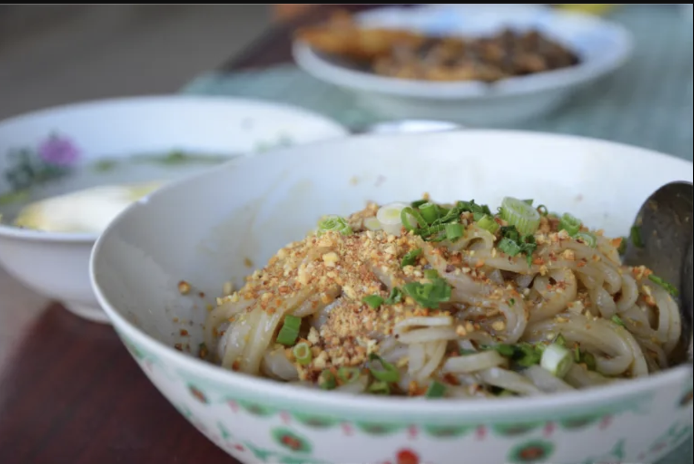
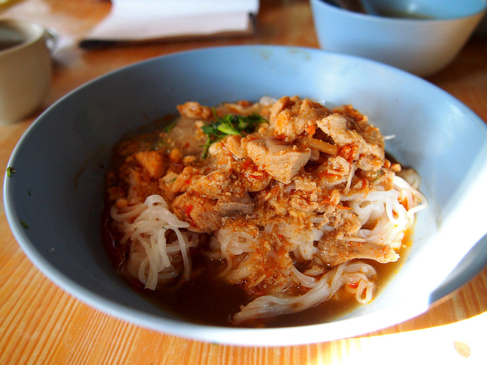

Cold Noodles & Salads
🎵 Music to Enjoy with This Page
 



Shan Noodle (Shan Rice Noodles)
Shan Noodles are a specialty from Myanmar’s Shan State. Thin rice noodles are tossed with a fragrant sauce made from chicken or pork, garlic oil, turmeric, and tomato. This dish is lightly spiced and served dry, often topped with fresh greens, peanuts, and chili flakes.
Full Recipe
| Prep Time | 15 minutes |
|---|---|
| Cooking Time | 20 minutes |
| Servings | 4 |
Ingredients
- Rice noodles – 200 g
- Chicken or pork – 200 g, thinly sliced or minced
- Onion – 1, finely chopped
- Garlic – 4 cloves, minced
- Tomatoes – 3, chopped
- Soy sauce – 1–2 tbsp
- Oil – 3 tbsp
- Crushed peanuts – 2 tbsp (optional)
- Sesame seeds (optional)
- Chili flakes – 1 tsp (optional)
- Fresh coriander or spring onion – for garnish
Steps
- Cook rice noodles according to package instructions; drain and set aside.
- Heat oil in a pan and sauté onion and garlic until fragrant.
- Add tomatoes and cook until softened.
- Add meat and stir-fry until fully cooked.
- Add soy sauce and toss the noodles with the meat mixture.
- Serve on plates and garnish with crushed peanuts, chili flakes, and fresh herbs.

Khauk Swe Thoke (Burmese Wheat Noodle Salad)
Khauk Swe Thoke is a classic Burmese noodle salad made with wheat noodles and shredded chicken, tossed in a tangy peanut or sesame-based dressing. This dry noodle dish is refreshing yet hearty, balancing savory, sour, and nutty flavors.
Full Recipe
| Prep Time | 20 minutes |
|---|---|
| Cooking Time | 15 minutes |
| Servings | 4 |
Nutrients per serving
| Calories | 350 kcal |
|---|---|
| Protein | 22 g |
| Fat | 16 g |
| Carbs | 32 g |
| Sodium | 650 mg |
Ingredients
- Wheat noodles – 200 g
- Shredded chicken – 150 g
- Onion – 1, thinly sliced
- Garlic – 3 cloves, fried until golden
- Peanut butter – 2 tbsp (or ground peanuts)
- Lime juice – 1 tbsp
- Soy sauce – 1 tbsp
- Oil – 2 tbsp
- Chili flakes – 1 tsp (optional)
- Fresh coriander or spring onion – for garnish
Steps
- Cook wheat noodles, drain, and set aside.
- Mix peanut butter, lime juice, soy sauce, and a little water to make the dressing.
- Toss noodles with shredded chicken, onions, fried garlic, and dressing.
- Plate the noodles and garnish with chili flakes and fresh herbs.
Nan Gyi Thoke (Thick Rice Noodle Salad)
Nan Gyi Thoke is a traditional Burmese dish made with thick round rice noodles mixed with chicken curry, chickpea flour, and onions. This hearty salad-style noodle dish has bold flavors from turmeric, chili, and fish sauce, and is served dry with crispy and fresh garnishes.
Full Recipe
| Prep Time | 20 minutes |
|---|---|
| Cooking Time | 25–30 minutes |
| Servings | 4 |
Nutrients per serving
| Calories | 380 kcal |
|---|---|
| Protein | 25 g |
| Fat | 18 g |
| Carbs | 35 g |
| Sodium | 700 mg |
Ingredients
- Thick rice noodles – 200 g
- Chicken – 200 g, shredded or diced
- Onion – 1, sliced
- Garlic – 4 cloves, minced
- Chickpea flour – 1 tbsp
- Turmeric powder – 1 tsp
- Chili powder – 1 tsp (optional)
- Fish sauce – 1–2 tbsp
- Oil – 3–4 tbsp
- Boiled egg – 1 per serving
- Fried crispy noodles – 2 tbsp
- Fresh coriander – for garnish
Steps
- Cook thick rice noodles according to package instructions; drain.
- Heat oil and sauté onion and garlic until fragrant.
- Add turmeric, chili powder, and chicken; stir until well combined.
- Mix in chickpea flour and fish sauce until the sauce coats the mixture.
- Toss the cooked noodles with the sauce.
- Serve on plates and top with boiled egg, crispy noodles, and fresh herbs.